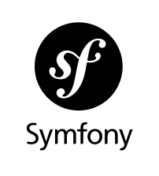
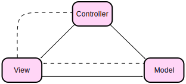
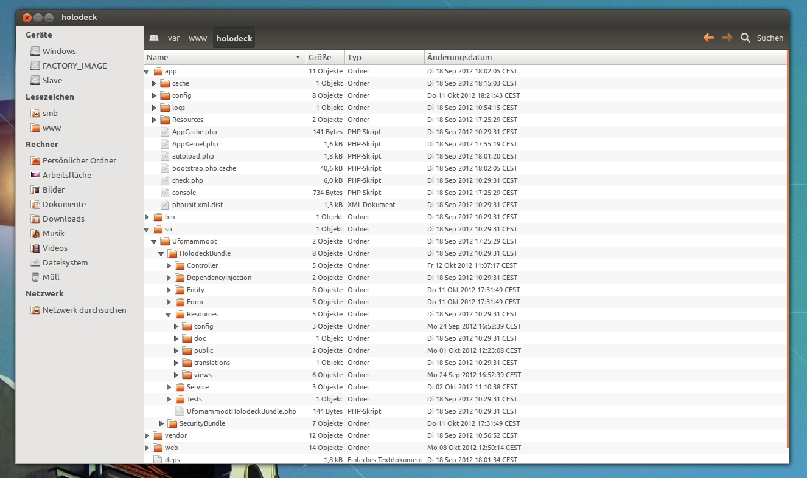
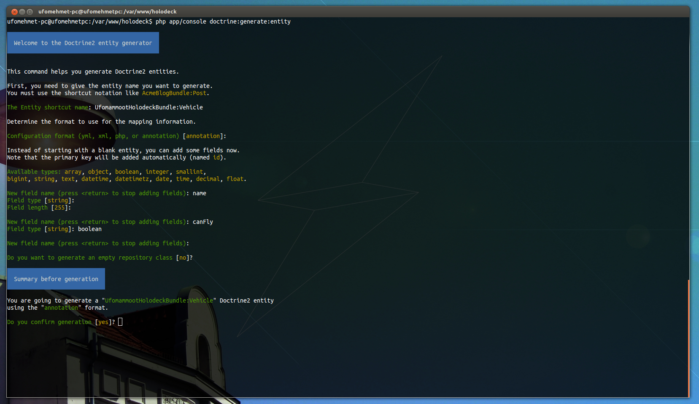

Warum überhaupt ein PHP-Framework?
- Redundantes Code-Gefrickel wird einem abgenommen.
- Sicherheitsrelevantes wird einem abgenommen.
- PHP ist 'ne Bitch!
Warum ist PHP 'ne Bitch?
- PHP lässt viel unsauberen Code zu.
- Selbst wenn man sich an Patterns hält, neigt man dazu Quick & Dirty zu arbeiten.
- Ein Framework zwingt einen durch seine Architektur oft zu sauberen Lösungen.
Architektur
Application Flow

Alles ist ein Bundle
AppKernel & Autoloader
Symfony2\CoreBundle
Mammoot\MainBundle
Mammoot\GalleryBundle
Mammoot\HolodeckBundle
Vendor\BeerBundle
MVC for the win

Alles ist ein (MVC-)Bundle
AppKernel & Autoloader
Symfony2\CoreBundle
Mammoot\MainBundle
Mammoot\GalleryBundle
Mammoot\HolodeckBundle
Vendor\BeerBundle
Bundles schnell integrieren
AppKernel & Autoloader
Symfony2\CoreBundle
Mammoot\MainBundle
Mammoot\GalleryBundle
Mammoot\HolodeckBundle
Vendor\BeerBundle
AppKernel & Autoloader
Symfony2\CoreBundle
Mammoot\MainBundle
Mammoot\HolodeckBundle
Vendor\BeerBundle
Mammoot\GalleryBundle
Mammoot\GalleryBundle
Autoloading / Abhängigkeiten
Autoloading
- PHP verfügt über kein Paketsystem.
- Abhängigkeiten von anderen Dateien müssen manuell gelöst werden.
Autoloading
- Frühere Lösungen:
<?php
include("../file1.php");
include("../file2.php");
<?php
require_once("../file1.php");
require_once("../file2.php");
Autoloading
- Frühere Lösungen:
<?php
include("../file1.php");
include("../file2.php");
<?php
require_once("../file1.php");
require_once("../file2.php");
Autoloading
- Neu in PHP 5.3
- Namespaces
- Autoloading
Autoloading
- Neu in PHP 5.3
- Namespaces:
<?php namespace "Mammoot\MeinRaum";
<?php use "Mammoot\MeinRaum";
Autoloading
- Neu in PHP 5.3
- Autoloading:
<?php
function __autoload($classname) {
if (...)
require $classname.'Bla'.'php';
else
require $classname.'php';
}
Autoloading
- Symfony2 kombiniert beides
- Der Namespace eines Bundles wird einmalig im Autoloader angemeldet.
- Anschließend reicht z.B.
use "Mammoot\MeinRaum\Controller";aus um die Controller aus MeinRaum zu importieren.
Unterm Rock

Abhängigkeiten
- Jedes Symfony2 Projekt ist abhängig von externen Bundles.
- Externe Bundles müssen leicht integrierbar / desintegrierbar sein.
- Externe Bundles müssen leicht aktualisierbar sein (Bugfixes?).
- Externe Bundles dürfen sich nicht mit eigener Geschäftslogik mischen.
Abhängigkeiten
- Alle Abhängigkeiten werden im deps-file eingetragen.
- Jedes Bundle wird mit seiner GitHub Adresse hinterlegt:
[SensioFrameworkExtraBundle]
git=http://github.com/sensio/SensioFrameworkExtraBundle.git
target=/bundles/Sensio/Bundle/FrameworkExtraBundle
version=origin/2.0
- Definierte Abhängigkeiten können mit dem Kommando
php bin/vendors installgepflegt werden.
Scaffolding
Scaffolding
- Mit der Konsole lässt sich fast alles erzeugen:
- Bundles
- Entities (Models) / Views / Controller
- CRUD Gerüst auf Basis einer Entity
- ...
- Generatoren können erweitert werden.
Entity Generator

Symfony2 von innen
MVC for the win
Code
ORM - Persistenzebene
ORM - Persistenzebene
- ORM: Object Relational Mapping!
- Zugriff auf Persistenzebene wird durch PHP-Objekte gekapselt.
- Statt selbst bspw. SQL-Queries abzusetzen, wird nur mit Datenobjekten gearbeitet.
- Das Persistenzmedium bleibt dabei komplett austauschbar.
ORM - Die Brücke zwischen PHP und Datenbank
- In PHP gibt es zwei etablierte ORM Bibliotheken:
- Doctrine
- Propl
- Beide können in Symfony2 verwendet werden.
ORM - Entities
- Um Datensätze zu repräsentieren werden POPOs (Plain Old PHP Objects) verwendet.
- Die Klassen dieser Objekte werden als Entities bezeichnet.
- Eine Entity ist lediglich die Schablone eines Datenobjektes und enthält keine Geschäftslogik!
ORM - Associations
- Entities können mit anderen Entities assoziert sein:
- OneToOne
- OneToMany
- ManyToMany
ORM - Associations
- Um assozierte Objekte abzurufen können die Getter-Methoden des übergeordneten Objektes genutzt werden:
$motherShip->getShuttles();- gibt eine Liste aller assoziierten Shuttles zurück.
ORM - Repositories
- Entities die nicht über eine Assoziation gefunden werden können, werden über ihr Repository abgerufen werden.
- Diese Repositories lassen sich über einen EntityManager-Service instanziieren:
$em = $this->getDoctrine()->getEntityManager();
$repo = $em->getRepository('UfomammootUfoBundle:Mothership');
ORM - Repositories
- Das Repository stellt find-Methoden bereit um bestimmte Objekte zu finden:
$repo->findAll() //Get all ships
$repo->find(17); //Get ship with ID 17
$repo->findByName("U.S.S. Mammoot"); //Get ship with name
"U.S.S. Mammoot"
ORM - Arbeiten mit Entities
- Ein Datenobjekt kann wie jedes Objekt über seine Getter und Setter verändert werden.
- Anschließend kann es dem Entity-Manager zum persistieren übergeben werden.
$ship->setName("U.S.S. Mam");
$em->persist($ship);
$em->flush();
- Erst der flush()-Befehl sendet alle Änderungen an die Datenbank.
Code
Service Layer
Service Layer
- Einzelne Klassen lassen sich als Service anmelden und werden so über den ServiceContainer zugänglich gemacht.
- Beispiel: Der Doctrine EntityManager wird in Controllern als Service injeziert.
- Jede Art von Programmlogik die nicht in M, V, oder C gehört ist in der Regel ein Service.
Code
Die Templatesprache Twig
Twig
- Symfony2 bringt die hauseigene Templatesprache 'Twig' mit.
- Neben Twig kann auch jede andere Templateengine verwendet werden.
- Auch Templates in reinem PHP zu schreiben ist möglich.
Twig
- Vom Controller aus kann das Rendern einer View ausgelöst werden.
- Der Output der Templateengine kann entweder als String angenommen werden, oder direkt als Resonse an den Client geschickt werden.
- Dem Template können im Renderbefehl optional Variablen übergeben werden.
Twig
- Besonderheiten von Twig:
- Templates können vererbt werden.
- Teilbereiche eines Templates können als Block definiert werden.
- Erbende Templates können diese Blöcke überschreiben.
Code
Die Spitze des Eisberges
- Caching
- Asset-Management
- Profiler
- Access Control / Authorisation
- ...
Beer 'o clock
| 11.06.2012 | Philipp Nowinski | / |